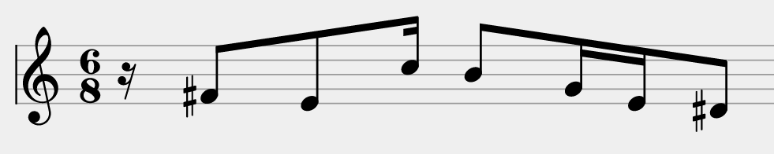

Programs are systems that process information. Therefore, programming
languages provide ways to model the domain of a program.
This section introduces the ways you can structure information in Scala.
We will base our examples on the following domain, a music sheet:

Aggregating Information With Case Classes
First, let’s focus on notes. Suppose that, in our program, we are
interested in the following properties of notes: their
name
(A, B, C, etc.), their
duration (whole, half,
quarter, etc.) and their octave number.
In summary, our note model aggregates several data (name,
duration and octave). We express this in Scala by using a case class
definition:
case class Note(
name: String,
duration: String,
octave: Int
)
This definition introduces a new type, Note. You can create values
of this type by calling its constructor:
val c3 = Note("C", "Quarter", 3)
c3 is a value that aggregates the arguments passed to the Note
constructor.
Then, you can retrieve the information carried by each member (name,
duration and octave) by using the dot notation:
case class Note(name: String, duration: String, octave: Int)
val c3 = Note("C", "Quarter", 3)
c3.name shouldBe "C"
c3.duration shouldBe res0
c3.octave shouldBe res1
Defining Alternatives With Sealed Traits
If we look at the introductory picture, we see that musical symbols
can be either notes or rests (but nothing else).
So, we want to introduce the concept of symbol, as something
that can be embodied by a fixed set of alternatives: a note or rest.
We can express this in Scala using a sealed trait definition:
sealed trait Symbol
case class Note(name: String, duration: String, octave: Int) extends Symbol
case class Rest(duration: String) extends Symbol
A sealed trait definition introduces a new type (here, Symbol), but no
constructor for it. Constructors are defined by alternatives that
extend the sealed trait:
val symbol1: Symbol = Note("C", "Quarter", 3)
val symbol2: Symbol = Rest("Whole")
Pattern Matching
Since the Symbol type has no members, we can not do anything
useful when we manipulate one. We need a way to distinguish between
the different cases of symbols. Pattern matching allows us
to do so:
def symbolDuration(symbol: Symbol): String =
symbol match {
case Note(name, duration, octave) => duration
case Rest(duration) => duration
}
The above match expression first checks if the given Symbol is a
Note, and if it is the case it extracts its fields (name, duration
and octave) and evaluates the expression at the right of the arrow.
Otherwise, it checks if the given Symbol is a Rest, and if it
is the case it extracts its duration field, and evaluates the
expression at the right of the arrow.
When we write case Rest(duration) => …, we say that Rest(…) is a
constructor pattern: it matches all the values of type Rest
that have been constructed with arguments matching the pattern duration.
The pattern duration is called a variable pattern. It matches
any value and binds its name (here, duration) to this value.
More generally, an expression of the form
e match {
case p1 => e1
case p2 => e2
…
case pn => pn
}
matches the value of the selector e with the patterns
p1, …, pn in the order in which they are written.
The whole match expression is rewritten to the right-hand side of the first
case where the pattern matches the selector e.
References to pattern variables are replaced by the corresponding
parts in the selector.
Exhaustivity
Having defined Symbol as a sealed trait gives us the guarantee that
the possible case of symbols is fixed. The compiler can leverage this
knowledge to warn us if we write code that does not handle all
the cases:
sealed trait Symbol
case class Note(name: String, duration: String, octave: Int) extends Symbol
case class Rest(duration: String) extends Symbol
def nonExhaustiveDuration(symbol: Symbol): String =
symbol match {
case Rest(duration) => duration
}
Try to run the above code to see how the compiler informs us that
we don’t handle all the cases in nonExhaustiveDuration.
Equals
It is worth noting that, since the purpose of case classes is to
aggregate values, comparing case class instances compare their values:
case class Note(name: String, duration: String, octave: Int)
val c3 = Note("C", "Quarter", 3)
val otherC3 = Note("C", "Quarter", 3)
val f3 = Note("F", "Quarter", 3)
(c3 == otherC3) shouldBe res0
(c3 == f3) shouldBe res1
Enumerations
Our above definition of the Note type allows users to create instances
with invalid names and durations:
val invalidNote = Note("not a name", "not a duration", 3)
It is generally a bad idea to work with a model that makes it possible
to reach invalid states. In our case, we want to restrict the space
of the possible note names and durations to a set of fixed alternatives.
In the case of note names, the alternatives are either A, B, C,
D, E, F or G. We can express the fact that note names are
a fixed set of alternatives by using a sealed trait, but in contrast to
the previous example alternatives are not case classes because they
aggregate no information:
sealed trait NoteName
case object A extends NoteName
case object B extends NoteName
case object C extends NoteName
…
case object G extends NoteName
Algebraic Data Types
Data types defined with sealed trait and case classes are called
algebraic data types. An algebraic data type definition can
be thought of as a set of possible values.
Algebraic data types are a powerful way to structure information.
If a concept of your program’s domain can be formulated in terms of
an is relationship, you will express it with a sealed trait:
“A symbol is either a note or a rest.”
sealed trait Symbol
case class Note(…) extends Symbol
case class Rest(…) extends Symbol
On the other hand, if a concept of your program’s domain can be
formulated in terms of an has relationship, you will express it
with a case class:
“A note has a name, a duration and an octave number.”
case class Note(name: String, duration: String, octave: Int) extends Symbol
Exercise
Consider the following algebraic data type that models note durations.
Complete the implementation of the function fractionOfWhole, which
takes as parameter a duration and returns the corresponding fraction
of the Whole duration.
sealed trait Duration
case object Whole extends Duration
case object Half extends Duration
case object Quarter extends Duration
def fractionOfWhole(duration: Duration): Double =
duration match {
case Whole => 1.0
case Half => res0
case Quarter => res1
}
fractionOfWhole(Half) shouldBe 0.5
fractionOfWhole(Quarter) shouldBe 0.25

![](data:image/svg+xml;base64,PD94bWwgdmVyc2lvbj0iMS4wIiBlbmNvZGluZz0iVVRGLTgiIHN0YW5kYWxvbmU9Im5vIj8+Cjxz
dmcgd2lkdGg9IjMycHgiIGhlaWdodD0iMzJweCIgdmlld0JveD0iMCAwIDMyIDMyIiB2ZXJzaW9u
PSIxLjEiIHhtbG5zPSJodHRwOi8vd3d3LnczLm9yZy8yMDAwL3N2ZyIgeG1sbnM6eGxpbms9Imh0
dHA6Ly93d3cudzMub3JnLzE5OTkveGxpbmsiPgogICAgPCEtLSBHZW5lcmF0b3I6IFNrZXRjaCAz
LjguMyAoMjk4MDIpIC0gaHR0cDovL3d3dy5ib2hlbWlhbmNvZGluZy5jb20vc2tldGNoIC0tPgog
ICAgPHRpdGxlPnN0ZF9saWI8L3RpdGxlPgogICAgPGRlc2M+Q3JlYXRlZCB3aXRoIFNrZXRjaC48
L2Rlc2M+CiAgICA8ZGVmcz4KICAgICAgICA8cGF0aCBkPSJNMTYuMjQ4MzczOSwyMS45OTc1IEMx
My40OTAwMzU4LDIyLjc5NiA5LjczMTQ0ODM2LDIzLjQxIDYuMzM3MjE2MzMsMjMuNzQ3NSBDNC4w
MzM1ODE5MSwyMy45OTMgMS45MTE2MzE0OCwyNC4xMTYgMC4zMDUxMTA2MDMsMjQuMTE2IEwwLjMw
NTExMDYwMywzMS44MjA1IEMyLjk3MjYwNjcsMzEuODIwNSAxMS4zNjg1NzksMzAuOTMwNSAxNi4z
OTk5NDE3LDI5LjUxODUgQzE4LjI0ODg3MjUsMjguOTk2NSAxOS45NzYzNTE1LDI4LjQxMzUgMTku
OTc2MzUxNSwyNy43Njg1IEwxOS45NzYzNTE1LDIwLjA2NCBDMTkuOTc2MzUxNSwyMC44MDA1IDE4
LjA5NzMwNDYsMjEuNDQ1NSAxNi4yNDgzNzM5LDIxLjk5NzUgTDE2LjI0ODM3MzksMjEuOTk3NSBa
IiBpZD0icGF0aC0xIj48L3BhdGg+CiAgICA8L2RlZnM+CiAgICA8ZyBpZD0iUGFnZS0xIiBzdHJv
a2U9Im5vbmUiIHN0cm9rZS13aWR0aD0iMSIgZmlsbD0ibm9uZSIgZmlsbC1ydWxlPSJldmVub2Rk
Ij4KICAgICAgICA8ZyBpZD0iYmV0YSIgdHJhbnNmb3JtPSJ0cmFuc2xhdGUoLTU4OC4wMDAwMDAs
IC03Mi4wMDAwMDApIj4KICAgICAgICAgICAgPGcgaWQ9InN0ZF9saWIiIHRyYW5zZm9ybT0idHJh
bnNsYXRlKDU4OC4wMDAwMDAsIDcyLjAwMDAwMCkiPgogICAgICAgICAgICAgICAgPGcgaWQ9Im9i
amVjdC0rLW9iamVjdC0rLW9iamVjdCIgdHJhbnNmb3JtPSJ0cmFuc2xhdGUoNi4wMDAwMDAsIDAu
MDAwMDAwKSI+CiAgICAgICAgICAgICAgICAgICAgPHBhdGggZD0iTTE2LjI0ODM3MzksMi4xMzcg
QzExLjYxMDk4ODksMy40ODggNC4yNzU5OTE3OSw0LjI1NSAwLjMwNTExMDYwMyw0LjI1NSBMMC4z
MDUxMTA2MDMsMTEuODk4NSBMMC4zMzU3MjA0MDQsMTEuOTYgQzMuMDMzMzMyNTksMTEuOTYgMTEu
MzY4NTc5LDExLjA3IDE2LjM5OTk0MTcsOS42NTggQzE3LjM3MDA3NSw5LjM4MTUgMTguMzA5NTk4
NCw5LjEwNSAxOC45NzYxMDIxLDguNzk4NSBDMTkuNTgyMzczNyw4LjUyMiAxOS45NzYzNTE1LDgu
MjE1IDE5Ljk3NjM1MTUsNy45MDggTDE5Ljk3NjM1MTUsMC4yMDM1IEMxOS45NzYzNTE1LDAuOTcw
NSAxOC4wOTczMDQ2LDEuNjE1NSAxNi4yNDgzNzM5LDIuMTM3IEwxNi4yNDgzNzM5LDIuMTM3IFoi
IGlkPSJvYmplY3QiIGZpbGw9IiNGRkZGRkYiPjwvcGF0aD4KICAgICAgICAgICAgICAgICAgICA8
cGF0aCBkPSJNMTYuMjQ4MzczOSwxMi4wODMgQzEzLjQ5MDAzNTgsMTIuODgxIDkuNzMxNDQ4MzYs
MTMuNDk1IDYuMzM3MjE2MzMsMTMuODMyNSBDNC4wNjM2OTgwMSwxNC4wNzggMS45MTE2MzE0OCwx
NC4yMDEgMC4zMDUxMTA2MDMsMTQuMjAxIEwwLjMwNTExMDYwMywyMS44NDQ1IEwwLjMzNTcyMDQw
NCwyMS45MDU1IEMzLjAzMzMzMjU5LDIxLjkwNTUgMTEuMzY4NTc5LDIxLjAxNTUgMTYuMzk5OTQx
NywxOS42MDM1IEMxNy4zNzAwNzUsMTkuMzI3IDE4LjMwOTU5ODQsMTkuMDUxIDE4Ljk3NjEwMjEs
MTguNzQ0IEMxOS41ODIzNzM3LDE4LjQ2NzUgMTkuOTc2MzUxNSwxOC4xNjA1IDE5Ljk3NjM1MTUs
MTcuODUzNSBMMTkuOTc2MzUxNSwxMC4xNDkgQzE5Ljk3NjM1MTUsMTAuODg1NSAxOC4wOTczMDQ2
LDExLjUzIDE2LjI0ODM3MzksMTIuMDgzIEwxNi4yNDgzNzM5LDEyLjA4MyBaIiBpZD0ib2JqZWN0
IiBmaWxsPSIjRkZGRkZGIj48L3BhdGg+CiAgICAgICAgICAgICAgICAgICAgPG1hc2sgaWQ9Im1h
c2stMiIgZmlsbD0id2hpdGUiPgogICAgICAgICAgICAgICAgICAgICAgICA8dXNlIHhsaW5rOmhy
ZWY9IiNwYXRoLTEiPjwvdXNlPgogICAgICAgICAgICAgICAgICAgIDwvbWFzaz4KICAgICAgICAg
ICAgICAgICAgICA8dXNlIGlkPSJvYmplY3QiIGZpbGw9IiNGRkZGRkYiIHhsaW5rOmhyZWY9IiNw
YXRoLTEiPjwvdXNlPgogICAgICAgICAgICAgICAgPC9nPgogICAgICAgICAgICA8L2c+CiAgICAg
ICAgPC9nPgogICAgPC9nPgo8L3N2Zz4=)